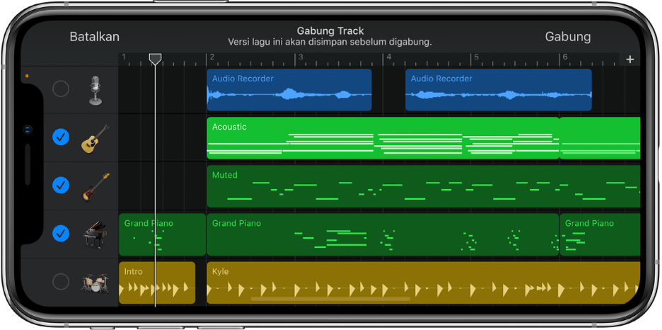

GarageBand is a line of digital audio workstations for macOS, iPadOS, and iOS devices that allows users to create music or podcasts. GarageBand is developed by Apple for macOS, and was once part of the iLife software suite, along with iMovie and iDVD. Its music and podcast creation system enables users to create multiple tracks with pre-made MIDI keyboards, pre-made loops, an array of various instrumental effects, and voice recordings.
GarageBand for iOS makes it easy to play, record, and share music, wherever you are. Take advantage of various types of musical instruments from around the world. And with an ever-growing Sound Library, you can browse and download a vast collection of free sounds, loops, and samples created by some of the world's greatest producers.